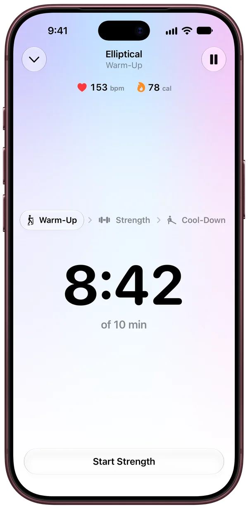
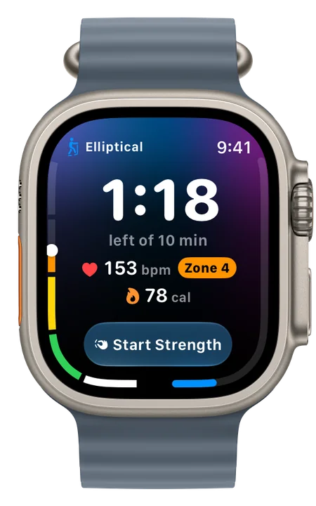
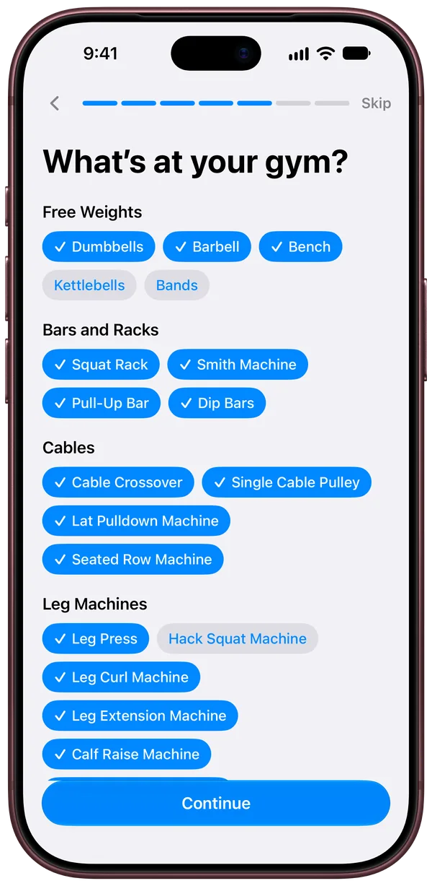
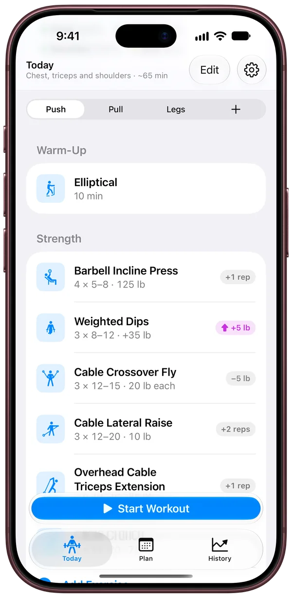
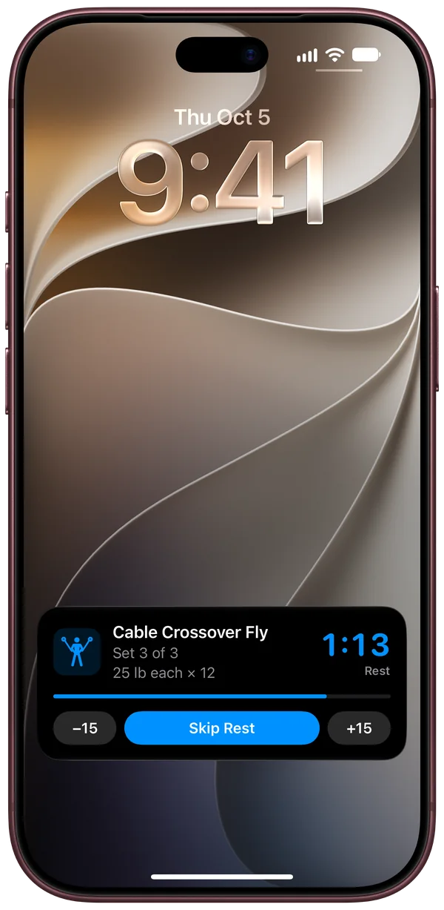
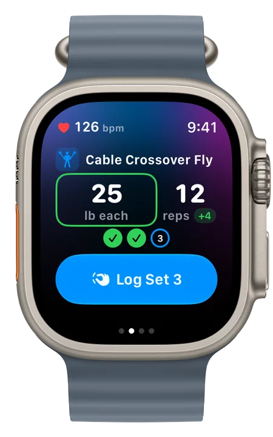
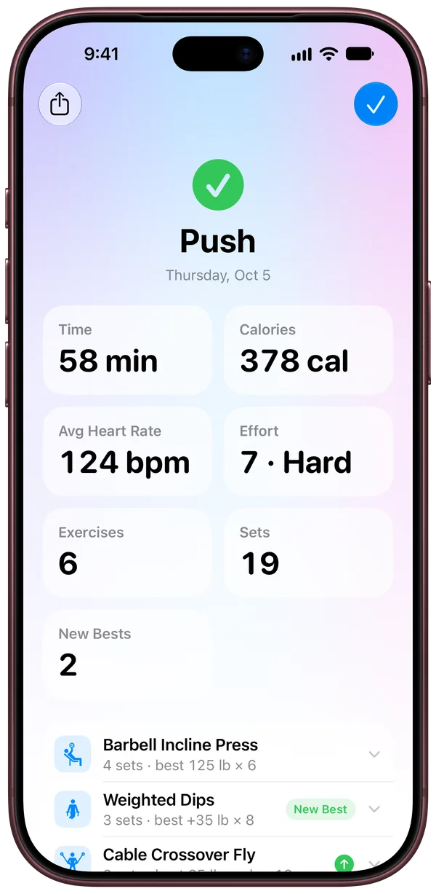
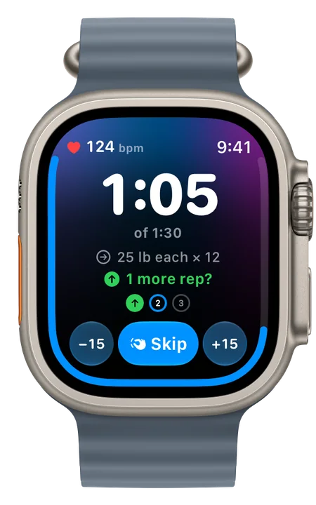
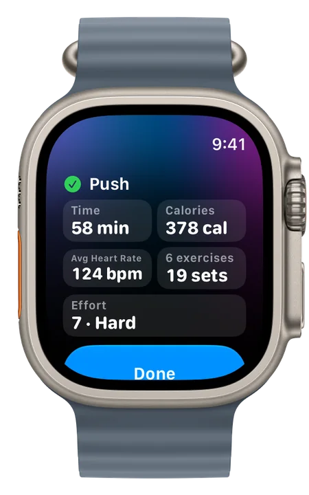

In development
FITTR
A better way to train.
FITTR plans every workout and shows your progress over time. Your Apple Watch handles the rest.


Plan. Train. Repeat.
Pick the equipment you have.
Ready when you are.
Log sets with a tap without unlocking your phone.
Time, calories, heart rate and your best sets.



1:13

Progress you can see.
FITTR shows how your training is trending. You’ll see when you’re getting stronger.
- Strength for the lifts in your plan
- Workouts and sets each week
- VO2 max from your Apple Watch
- Total volume
- Calories burned
History
Trends
- Workouts6.6 a week
- Sets140 a week
- Volume44,600 lb a week
- Active Calories2,598 a week
- VO2 Max47.5
Just lift.
-
The right weight every time
Suggested from what you did last time.
-
Up or down as you lift
See right away how a set compares.
-
A trainer between sets
When to add a rep, add weight or go lighter.
-
Your watch runs the workout
Live heart rate and calories, and a tap when rest is up.


Start with a plan
Describe your goals
Apple Intelligence drafts a plan on your iPhone.
Paste a plan
From a coach, a PDF or any AI.
Ask your own AI
Plan with the AI you already use.
Start blank
Create your own plan.
Syncs with iCloud and Apple Health.
Your watch saves every workout to Apple Health with its heart rate, calories and effort, and the route of an outdoor run or walk. Your workouts are there on your iPhone and Apple Watch with the rest of your health data.
Before you train, FITTR shows last night’s sleep, HRV and resting heart rate against your typical range.


Also in FITTR
Cardio, lifting and stretching in one workout
From the elliptical to your last stretch.
Warm-up sets worked out for you
Ease into every lift.
Rate your effort
Track the intensity of your workouts.
Beat your best
FITTR cheers you on and celebrates new records.
Swap a lift when the equipment is taken
Get a close alternative for the same muscles.
Export to a spreadsheet
Open your workouts in any spreadsheet app.
Import your Fitbod history
Bring your logged sets with you.
And more
- Compare each set your way
- Variations of a lift
- Train to how you slept
- Cool down your way
- Runs, walks and swims
Your data stays yours.
No data collected
FITTR never stores your data.
No account
No sign-up and no password.
No ads or tracking
Nothing about you is sold or shared.
In development
FITTR
- Requires
- iPhone with iOS 27 or later, and Apple Watch with watchOS 27 or later
- Language
- English
- Account
- None
- Data collected
- None
- Developer
- NUTTR
- Help
- support@nuttr.co
Plans made from your goals need an iPhone with Apple Intelligence. FITTR isn’t affiliated with Fitbod.